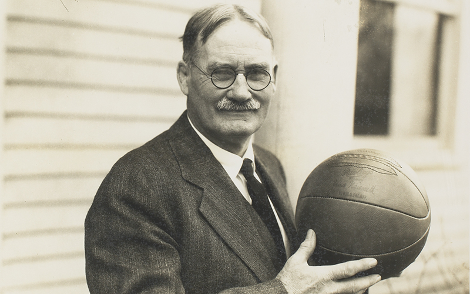
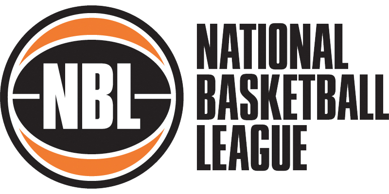
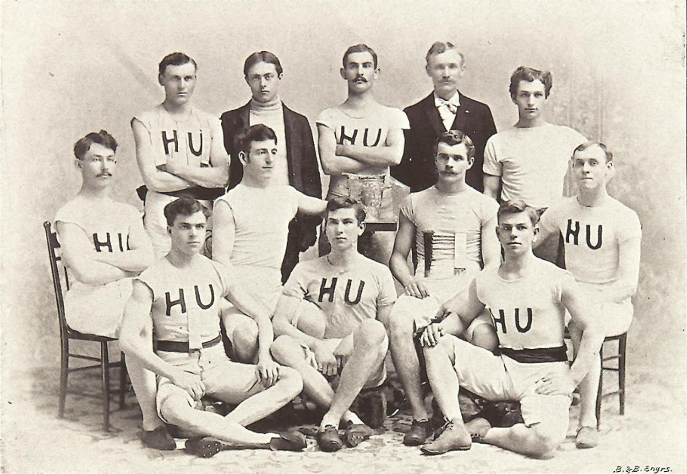
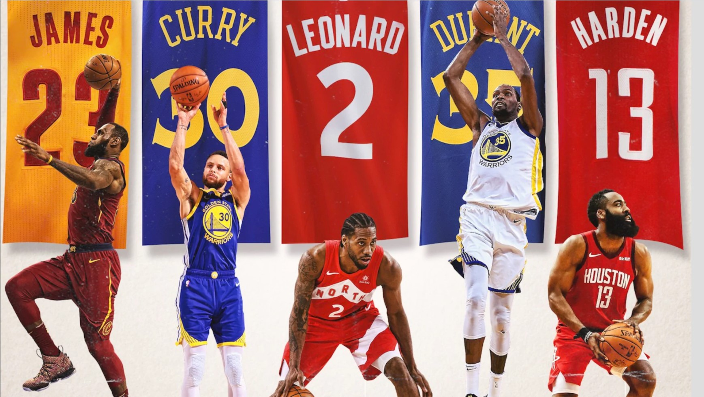

1891
James Naismith, an instructor for physical education, invented the sport basketball in Springfield, Massachusetts. Naismith used two peach baskets as the hoops and a soccer ball. He later published 13 rules for his newfound game and named it basketball.

1892
The first official game of basketball was played with 9 players in the YMCA gymnasium in Albany, New York. The court was roughly half the size of the current-day NBA (National Basketball Association) court.

1894
The first professional basketball league, the NBL (National Basketball League), was formed. This league was formed to protect players from exploitation and to promote a less rough game but was later disbanded after 5 years.

1895
The first college basketball game was played between Minnesota A&M and Hamline University. The game was played in the basement of the Hall of Science at Hamline University and a make-shift court was constructed in a former dining hall. Minnesota won the game 9-3.

1949
The NBL, National Basketball League, and the BAA, Basketball Association of America, merged to create the NBA, National Basketball Association. Maurice Podoloff, an American lawyer and basketball and ice hockey administrator, served as the first president of this new league.
